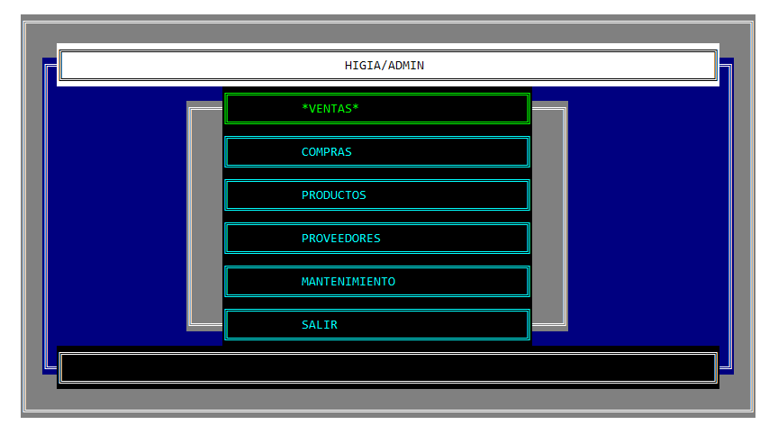
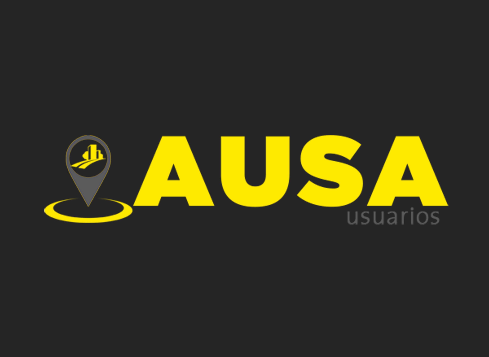
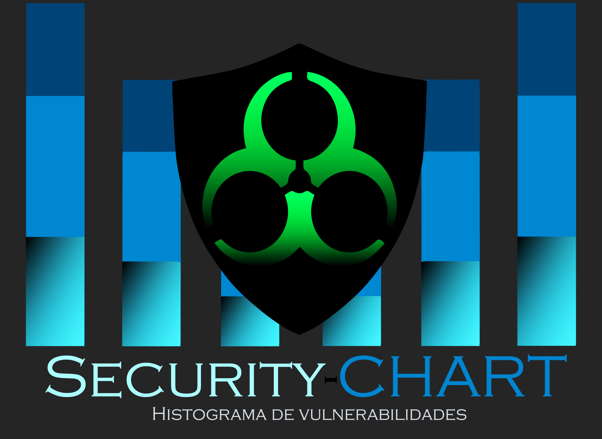

Admin-Distri:
Este en un software completamente desarrollado en C++. Se trata de un programa destinado a la administración de stock y ventas para una distribuidora de bebidas.
Su ejecución es mediante consola.

Higia-Admin:
Este en un software completamente desarrollado en C++. Se trata de una versión mejorada del Admin-Distri. Al estar destinado a la venta de artículos
sueltos , el sistema tiene contemplado la venta por cantidades y unidades. Su ejecución es mediante consola.

Pointer-Bucks:
Este en un software desarrollado en C# y .NET. Este sistema está destinado a comercios, brindar la posibilidad de facturar mediante escáner.
Permite la administración de stock, impresión de comprobantes y la creación de reportes de ventas. Presenta una intuitiva interfaz gráfica.

AUSA-Usuarios:
Este en un software desarrollado en C# y .NET. Este sistema está destinado al uso interno de la empresa AUSA (Autopistas Urbanas Sociedad
Anónima), otorga un acceso rápido a la información de los usuarios. permite una búsqueda detalla por nombre, apellido o legajo. Se puede cargar su base de datos con el ingreso de un archivo CSV.

Security-Chart
Este en un software desarrollado en C# y .NET. Este sistema tiene como objetivo llevar un seguimiento de las vulnerabilidades de seguridad
que presenta la infraestructura de una empresa. Con la carga de un CSV obtenido después de un análisis Security-Chart genera gráficos y estadísticas detalladas, además de generar un histograma de mejoras a través del tiempo. Todos
los informes pueden imprimirse o guardarse en formato PDF.
#include<>
Un video juego ambientado en un futuro distópico, creado con el motor grafico unity. Intenta conseguir todas las librerías de código para que tu robot consiga el máximo
poder y así llevar al programador hacia la salvación. La beta de este juego se realizó en 48 Hrs. para la Go To Game Jam en diciembre del 2020.